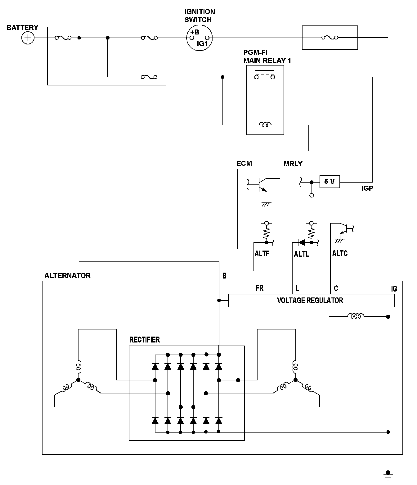
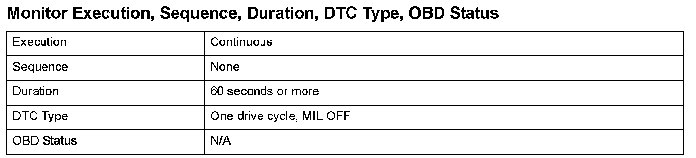
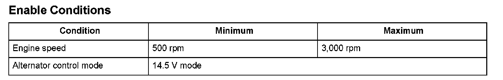

Advanced Diagnostics
DTC P16BB: Alternator B Terminal Circuit Low Voltage (Engine Type: K20Z3)
General Description
The alternator is driven by the engine, and it generates electricity to supply the necessary power to the electrical system and to charge the battery. The alternator voltage target values of 14.5 V and 12.5 V are achieved by switching the alternator control mode (controlled by the engine control module (ECM)). The alternator output signal is sent to the ECM, and it varies according to the battery's state of charge, the electrical load, and the engine speed.
When the engine speed is a specified value and the IGP terminal voltage is below a set value when the alternator is in the 14.5 V mode, and the alternator power generation amount is within the set range, and this condition continues more than a set time, the ECM detects a malfunction and a DTC is stored.

Monitor Execution, Sequence, Duration, DTC Type, OBD Status

Enable Conditions
Malfunction Threshold
The IGP terminal voltage is 12.0 V or less, and the alternator power generation amount is within 1.0 % to 60.0 %, for at least 60 seconds.
Driving Pattern
1. Start the engine.
2. Maintain an engine speed of 500 rpm to 3,000 rpm.
3. Turn on the headlights (high beam) and rear window defogger.
Diagnosis Details
Conditions for illuminating the indicator
When a malfunction is detected, the DTC and the freeze frame data are stored in the ECM memory. The MIL does not come on.
Conditions for clearing the DTC
The DTC and the freeze frame data can be cleared by using the scan tool Clear command or by disconnecting the battery.